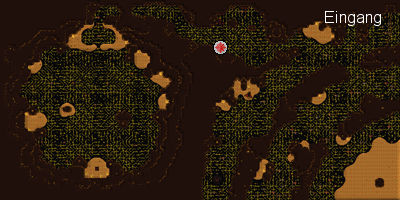

")
Kampfhöhlen der TzHaar
Einführung | Lage | Voraussetzungen | Empfohlene Ausrüstung | Fortschritt speichern
Kampf ums Überleben | TzTok-Jad | Belohnungen | Entwicklung
Kampf ums Überleben | TzTok-Jad | Belohnungen | Entwicklung
Nur RuneScape-Mitglieder haben Zugang. Bitte werdet Mitglied, um auf dieses Feature zugreifen zu können.
Bitte beachtet, dass es sich hierbei um ein 'sicheres' Minispiel handelt. Falls ihr während des Minispiels sterbt, behaltet ihr alle eure Gegenstände.
Einführung

Die Kampfhöhlen der TzHaar bieten ein temporeiches Einzelspieler-Erlebnis mit Spannung ohne Grenzen. Seid ihr stark genug, um mehrere Angriffswellen mit den verschiedenen Kreaturen zu überstehen? Habt ihr das Zeug dazu, euch gegen diese Bestien zu behaupten und im Überlebenskampf als Sieger hervorzugehen?
Lage

Die Stadt der TzHaar liegt tief unter dem Vulkan von Karamja. Um dorthin zu gelangen, müsst ihr das Verlies unter dem Vulkan ausfindig machen. Nachdem ihr hinunter gestiegen seid, seht ihr einen Verlies-Eingang aus Lava-ähnlichem Material. Wenn ihr dort hindurchgeht, kommt ihr ins Gebiet der TzHaar. Von dort aus müsst ihr euch gen Süden halten, bis ihr an eine Kreuzung kommt. Lauft dann Richtung Westen, bis ihr zur Bank kommt und den Stern für Minispiele seht. Dort ist der Eingang in die Kampfhöhlen.
Voraussetzungen
Ihr müsst keine bestimmten Abenteuer abgeschlossen haben, um die Kampfhöhlen betreten zu dürfen. Wenn ihr allerdings mit dem Endgegner kämpfen wollt, braucht ihr eine hohe Kampfstufe und viel Erfahrung in Gebet (Stufe 60 oder höher).
Empfohlene Ausrüstung
Wichtig: Wenn ihr in den Kampfhöhlen sterbt, behaltet ihr all eure Gegenstände. Verlorene Pfeile oder Runen werden allerdings nicht ersetzt, also wählt euren Kampfstil und eure Waffen mit Bedacht.
In Verbindung mit allen Angriffsstilen ist ein Gebetstrank unbedingt notwendig. Gutes Essen, das viele Lebenspunkte heilt, ist ebenfalls empfehlenswert, um euch bei eventuellen Verletzungen zu retten.
Magie
Obwohl es so aussieht, als wäre Magie ein gute Methode, um die Monster und den Endgegner zu besiegen, solltet ihr nur zu Magie greifen, wenn eure Stufe hoch genug ist, um die wirklich vernichtenden Zauber zu sprechen und wenn ihr euch die vielen Runen leisten könnt, die ihr für einen Sieg brauchen werdet. Denkt dran, dass der Inhalt eures Inventars euch bis zum Endgegner reichen muss.Wenn ihr euch dennoch entscheidet, als Magier in den Kampf zu ziehen, müsst ihr die besten Roben tragen, die ihr für eure Ersparnisse bekommt, um damit eure Magiestufe zu erhöhen. Solltet ihr schon auf die Magie der Ahnen zugreifen können, findet ihr in diesem Zauberbuch noch mächtigere Angriffe.
Nahkampf
Als Nahkämpfer alle Runden zu überstehen, ist alles andere als ein Kinderspiel. Ihr solltet euch darauf gefasst machen, dass ihr großen Schaden davontragen und eure Gebetstränke schnell aufbrauchen werdet, wenn ihr euch nicht gut konzentriert. Wie immer sollte ein Großteil eures Inventars mit Gebetstränken und hochstufigem Essen belegt sein. Ihr werdet Schwierigkeiten haben, die Ket-Zek der Stufe 360 im Nahkampf zu besiegen, wenn sie das erste Mal auf euch zu kommen. Daher solltet ihr Magie-Schutz anwenden, von vorne angreifen, sie gut beobachten und das Gebet, wenn notwendig, zu Nahkampf-Schutz wechseln. Das wird gar nicht leicht für euch!Fernkampf
Normalerweise setzt man sich in den Höhlen mit Fernkampf zur Wehr. Ihr solltet unbedingt Gebetstränke im Inventar haben. Außerdem könnt ihr hochstufige Fernkampf-Ausrüstung tragen, z.B. die komplette Schwarzdrachen-Rüstung, oder eure Kleidung mit Teilen aufwerten, die euch einen Gebetsbonus verschaffen.
Fortschritt speichern
Da ihr unter Umständen manchmal länger braucht, um euch durch die Kampfhöhlen zu kämpfen, könnt ihr jetzt am Ende jeder Angriffswelle euren Spielstand abspeichern, falls ihr euch aus irgendwelchen Gründen ausloggen müsst. Dazu müsst ihr nur einmal auf die Schaltfläche 'Ausloggen' klicken und werdet dann automatisch ausgeloggt, sobald alle Gegner der momentanen Welle besiegt wurden. Wenn ihr euch dann wieder einloggt, fangt ihr direkt mit der nächsten Welle an. Falls ihr es schafft, euch vor dem Ende der Welle auszuloggen, (indem ihr dem Kampf für 10 Sekunden aus dem Weg geht), dann müsst ihr die Welle, auf der ihr euch ausgeloggt habt, erneut bestreiten.
Seid vorsichtig mit diesem Feature, vor allem in Wellen, in denen die Ket-Zek auftauchen. Wenn ihr euch wieder einloggt, könnte es schwierig werden, die Schutzgebete einzuschalten (schnelle Gebetsauswahl könnte hier helfen), bevor die Ket-Zek ihre Magieangriffe starten.
Kampf ums Überleben
Von dem Moment an, wo ihr die Höhle betretet, seid ihr auf euch gestellt. Ihr steht vor einer der härtesten Prüfungen in ganz RuneScape!
In den Kampfhöhlen gibt es mehrere Wellen, von denen jede schwieriger und gefährlicher ist als die vorherige. Ihr solltet den Ton und die Klangeffekte eingeschaltet haben, da ihr dann an den Geräuschen erkennen könnt, wann die nächste Welle startet.
Die meisten Monster in der Höhle haben einzigartige Angriffsmethoden, die euch die Arbeit erschweren. Ihr solltet also gut planen, auf wen ihr zuerst losgeht.
![[Bild]](../../img/main/kbase/minigames/tzhaar_fightcave/tz_kih.gif)
|
![[Bild]](../../img/main/kbase/minigames/tzhaar_fightcave/tz_kek.gif) |
|
| Tz-Kih - Stufe 22 Auch wenn sie mit ihrer Kampfstufe von 22 scheinbar harmlos daherkommen, solltet ihr diese Wesen dringend vernichten, wenn sie euch heimsuchen. Jedes Mal, wenn sie euch angreifen (selbst wenn sie euch nur 0 Schaden zufügen), wird euch ein Gebetspunkt abgezogen. Wenn sie also auf euch zufliegen, solltet ihr sie mit Fernkampf- oder Magie-Angriffen beschießen, bevor sie euch schaden können. |
Tz-Kek - Stufe 45 Diese Biester sind ebenfalls gar nicht so leicht zu besiegen. Sie teilen 10 Punkte Schaden an euch aus, wenn ihr sie trefft. Am besten greift ihr sie mit Fernkampf oder Magie an. Sobald sie tot sind, werden sie sich in zwei kleinere Tz-Keks der Stufe 22 aufteilen. Gegen diese könnt ihr dann mit eurer bevorzugten Kampftechnik antreten. |
|
![[Bild]](../../img/main/kbase/minigames/tzhaar_fightcave/tok_xil.gif)
|
![[Bild]](../../img/main/kbase/minigames/tzhaar_fightcave/yt_mej_kot.gif)
|
|
| Tok-Xil - Stufe 90 Diese Monster sollte man auf keinen Fall unterschätzen. Sie benutzen sowohl Nahkampf als auch Fernkampf und sind speziell im Fernkampf sehr stark und gefährlich. Tok-Xils sollten auf eurer Abschussliste weit oben stehen, denn sie können euch in späteren Runden leicht durch Fernkampf-Attacken töten. |
Yt-MejKut - Stufe 180 Hier haben wir einen gefährlichen Nahkämpfer, der allerdings etwas schwerfällig und somit leichter zu töten ist. Yt-MejKut ist sehr groß und steckt manchmal in den Felsen fest, wodurch ihr ihn etwas besser besiegen könnt. Während Yt-MejKut euch angreift, kann er sich selbst oder andere Monster in seiner Umgebung heilen. |
|
![[Bild]](../../img/main/kbase/minigames/tzhaar_fightcave/ket_zek.gif)
|
![[Bild]](../../img/main/kbase/minigames/tzhaar_fightcave/yt_hur_kot.gif)
|
|
| Ket-Zek - Stufe 360 Spätestens jetzt werdet ihr für eure Gebetstränke oder andere Ausrüstung, die Gebetsboni verleiht, dankbar sein. Ket-Zek hat kein Problem damit, den stärksten Kämpfer in wenigen Schlägen fertig zu machen. Obwohl Ket-Zek groß und gefährlich ist, könnt ihr ihn mit Magie oder Fernkampf besiegen, indem ihr euren Magie-Schutz anstellt und aus der Ferne angreift. Als Nahkämpfer wird es schon etwas problematischer, denn Ket-Zek schlägt unglaublich fest zu. Versucht also, eure Gebete wirkungsvoll einzusetzen und greift ihn so schnell wie möglich an. |
Yt-HirKut - Stufe 108 Diese Monster tun euch eigentlich nichts, aber im Endkampf gegen TzTok-Jad sind sie tödlich. Dann kommen sie aus der Versenkung, um die Gesundheit von TzTok-Jad wiederherzustellen. Die beste Lösung ist, sich gegen TzTok-Jads Angriffe zu verteidigen und gleichzeitig gezielt auf die Yt-HirKuts loszugehen, um jeden von ihnen so schnell wie möglich zu töten. |
|

|
TzTok-Jad - Stufe 702 Eines der stärksten und zähesten Monster auf ganz RuneScape. TzTok-Jad kann euch problemlos in zwei Schlägen töten, wenn ihr nicht richtig vorbereitet seid. TzTok-Jad nutzt alle Angriffsstile (Fernkampf, Magie und Nahkampf), um euch zu besiegen. Wenn ihr TzTok-Jad, mit etwas Glück, halb getötet habt, kommen die Heiler ins Spiel, die seine Gesundheit wieder vollständig herstellen können, falls ihr sie nicht rechtzeitig aus dem Weg räumt. |
TzTok-Jad besiegen

Ihr könnt zwar verschiedene Angriffsarten benutzen, wenn ihr euch zur letzten Welle durchkämpft, sobald ihr allerdings gegen TzTok-Jad antretet, müsst ihr genau wissen, welche Attacken er benutzen wird und wie ihr diesen am besten ausweicht.
Um euch gegen TzTok-Jad zu wehren, müsst ihr eure Fertigkeit Gebet einsetzen und daran anpassen, welchen Angriff TzTok-Jad als Nächstes starten wird.
TzTok-Jad nutzt alle Angriffsstile (Nahkampf, Fernkampf und Magie), wenn ihr ihm die Gelegenheit dazu gebt. Um zu überleben, müsst ihr lernen, so schnell wie möglich zu erkennen, welche Attacke er verwenden wird, damit ihr rechtzeitig das entsprechende Schutzgebet aktivieren könnt.
Nahkampf:
TzTok-Jad greift nur im Nahkampfstil an, wenn ihr neben ihm steht. Solltet ihr also Fernkampf oder Magie verwenden, müsst ihr keine Nahkampf-Angriffe befürchten, da ihr ihm nicht nahe genug kommen werdet. Für Nahkämpfer gilt: wenn TzTok-Jad nicht gerade einen seiner anderen Kampfstile benutzt, solltet ihr immer den Nahkampf-Schutz eingestellt haben.
Fernkampf:
TzTok-Jad bäumt sich auf und schlägt mit den Vorderbeinen auf den Boden, wodurch sich Steine von der Decke lösen und auf euch fallen. Sobald er die Beine hebt, sollte ihr euch auf eine Fernkampf-Attacke einstellen, die es in sich hat.
Magie:
Wenn ihr Magie anwendet, senkt TzTok-Jad seinen Kopf und sammelt so Kraft für seinen nächsten Angriff. Dann könnt ihr euch schon mal auf eine mächtige Magie-Attacke einstellen.
Wenn TzTok-Jad halbtot ist
Unabhängig von eurem Angriffsstil werden die Yt-HirKuts versuchen, TzTok-Jad zu heilen, wenn er halbtot ist. So schwer es euch auch fällt, jetzt müsst ihr aufhören, den Chef zu bekämpfen und euch darauf konzentrieren, die Yt-HirKuts zu beseitigen. Andernfalls kommen sie immer wieder und heilen TzTok-Jad irgendwann vollständig.Es gibt zwei Arten, mit den Heilern fertig zu werden:
Ihr könnt sie entweder bekämpfen oder am Leben lassen. In beiden Fällen müsst ihr sie mindestens einmal schlagen. Wenn ihr das gemacht habt, werden sie plötzlich alle auf euch losgehen und euch verfolgen. Jetzt müsst ihr eine Entscheidung treffen. Nun, da sie aufgehört haben, TzTok-Jad zu heilen, könnt ihr sie entweder zur Seite locken und einen nach dem anderen töten oder ihr fahrt mit dem Kampf gegen TzTok-Jad fort und hofft, dass ihr ihre Nahkampf-Angriffe überlebt.
Belohnungen
Sich in den Kampfhöhlen zu behaupten, ist nicht leicht, aber je weiter ihr kommt, desto mehr TokKul erhaltet ihr dafür.
Wenn ihr stark und ehrgeizig seid und das Glück habt, TzTok-Jad zu besiegen, werdet ihr mit dem Feuer-Umhang belohnt. Dieser Umhang ist derzeit der einzige animierte Umhang auf RuneScape und beschert euch die folgenden Boni:
| Gegenstand | |||||||||||||||||||
| Angriffsboni | Verteidigungsboni | Sonstiges | |||||||||||||||||
![[Bild: Stechen]](../../img/main/kbase/table_text/stab1.gif "Stechen") |
![[Bild: Schlitzen]](../../img/main/kbase/table_text/slash1.gif "Schlitzen") |
![[Bild: Schmettern]](../../img/main/kbase/table_text/crush1.gif "Schmettern") |
![[image: Magie]](../../img/main/kbase/table_text/magic1.gif "Magie") |
![[Bild: Fernkampf]](../../img/main/kbase/table_text/range1.gif "Fernkampf") |
|
|
|
|
|
![[Bild: Beschwörung]](../../img/main/kbase/table_text/summoning1.gif "Beschwörung") |
![[Bild: Stärke]](../../img/main/kbase/table_text/strength1.gif "Stärke") |
![[Bild: Gebet]](../../img/main/kbase/table_text/prayer1.gif "Gebet") |
|||||||
![[Bild]](../../img/main/kbase/minigames/tzhaar_fightcave/cape_fire2.gif) Feuer-Umhang |
+ 1 | + 1 | + 1 | + 1 | + 1 | + 11 | + 11 | + 11 | + 11 | + 11 | + 11 | + 4 | + 2 | ||||||
Die Leute, die alle Angriffswellen überlebt haben, erhalten zusätzlich noch 16.000 TokKul.
Auf der Seite TzHaar - Belohnungen findet ihr eine Liste der TzHaar-Gegenstände und weitere Informationen über TokKul.
Entwicklung
| Grafische Überarbeitung | |||
| Entwicklung: | Graham B | Entwicklung: | Paul B |
| Grafik: | James W, John S | Grafik: | Matt M, Matt S, Alex R, Linh N |
| Qualitätssicherung: | Andy C | Qualitätssicherung: | Daniel O'R |
| Audio: | Ian T | ||

Weitere Artikel in Minispiele
|
|
|
Weiterführende Informationen Wenn euch dieser Artikel nicht weitergeholfen hat, könnt ihr in den folgenden Kapiteln der RuneScape-Webseite mehr Informationen finden:
|
|